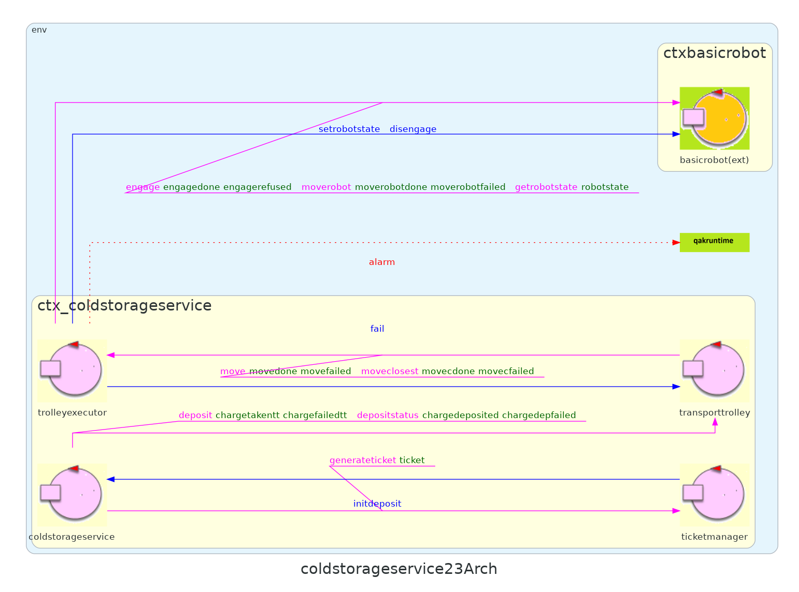

In questo Sprint verranno analizzati gli Alarm Requirements relativi al movimento del TransportTrolley.
Descrizione requirements a questa pagina
Viene riportato nel seguente documento la versione del TemaFinale23 analizzata contestualmente a questo Sprint.
Questo componente è alieno al progetto core del sistema (qak), non è per cui necessario, per ora, riportarne il modello architetturale.
Si riporta di seguito il modello di architettura logica, limitato al contesto di interesse di questo Sprint.
ATTENZIONE: warning/alarm device NON vengono generati dal modello qak, saranno aggiornati manualmente a fronte di eventuali modifiche.
Data la natura del vincolo che impone al TransportTrolley di fermarsi sarà necessario decidere se inviare al TransportTrolley un segnale di stop quando viene rilevata una certa distanza oppure inviare tutte le rilevazioni di distanza generate dal warning device sul RaspberryPi, lasciando che sia esso a decidere quando fermarsi (a seconda di DLIMT e MINT).
Da questa domanda emergono due possibili modelli di interazione relativi alle misure rilevate dal sonar:
Modello 1:
| Mittente | Destinatario | Tipologia interazione/messaggio | Identificatore messaggio | Payload | Descrizione |
|---|---|---|---|---|---|
| RaspberryPi | transporttrolley | Dispatch | sonarstop | sonarstop() | Indica al transporttrolley di fermarsi. |
| RaspberryPi | transporttrolley | Dispatch | sonarstart | sonarstart() | Indica al transporttrolley di ripartire. |
Modello 2:
| Mittente | Destinatario | Tipologia interazione/messaggio | Identificatore messaggio | Payload | Descrizione |
|---|---|---|---|---|---|
| RaspberryPi | Event | distance | distance(DIST) | Il sonar ha rilevato un nuovo dato. | |
| sonar | transporttrolley | Dispatch | sonarstop | sonarstop() | Indica al transporttrolley di fermarsi. |
| sonar | transporttrolley | Dispatch | sonarstart | sonarstart() | Indica al transporttrolley di ripartire. |
Il warning device deve essere in grado di mostrare tra stati diversi: TT fermo, TT in movimento e TT in HOME, il led si presta a questo scopo:
Per fare in modo che il RaspberryPi abbia le informazioni relative allo stato del TransportTrolley è possibile agire in due modi differenti, si propongono quindi due modelli di interazione:
Modello 1:
| Mittente | Destinatario | Tipologia interazione/messaggio | Identificatore messaggio | Payload | Descrizione |
|---|---|---|---|---|---|
| transporttrolley | RaspberryPi | Dispatch | ttstate | ttstate(STATE) | Lo stato del TransportTrolley è cambiato. |
Modello 2:
| Mittente | Destinatario | Tipologia interazione/messaggio | Identificatore messaggio | Payload | Descrizione |
|---|---|---|---|---|---|
| transporttrolley | RaspberryPi | Event | ttstate | ttstate(STATE) | Lo stato del TransportTrolley è cambiato. |
Contestualmente agli obiettivi di questo sprint si considerano le seguenti due costanti:
| Costante | Tipo | Descrizione |
|---|---|---|
| DLIMT | Float | Quando il sonar rileva una distanza minore di questo valore il TransportTrolley deve essere fermato. |
| MINT | Int | Millisecondi che devono trascorrere perché il robot possa essere nuovamente fermato dal sonar. |
TODO: paragrafo su cosa è e come si utilizza.
TODO: paragrafo su modello e caratteristiche, ref costante cm
TODO: formalizza cos'è
Partendo dai modelli individuati nell'analisi dei requisiti si può notare come alcuni di essi non offrono soluzioni che rispettano i principi della clean architecture.
Se si utilizzasse il modello che prevede un Dispatch per l'informazione sullo stato del TransportTrolley si creerebbe una relazione stretta tra i due componenti; è preferibile implementare un modello di interazione che non prevede la conoscenza dell'esistenza del RaspberryPi da parte del TransportTrolley.
Facendo riferimento al warning device si decide invece di inviare la distanza al TransportTrolley, lasciando che esso implementi la logica di arresto e ripartenza per mantenere il business core all'interno del servizio e non su un componente esterno (che potrebbe essere sostituito con altre implementazioni).
Alla luce di queste considerazioni si sceglie di proseguire con il seguente modello di interazione:
| Mittente | Destinatario | Tipologia interazione/messaggio | Identificatore messaggio | Payload | Descrizione |
|---|---|---|---|---|---|
| RaspberryPi | Observable resource | distance | distance(DIST) | Il sonar ha rilevato un nuovo dato. | |
| sonar | transporttrolley | Dispatch | sonarstop | sonarstop() | Indica al transporttrolley di fermarsi. |
| sonar | transporttrolley | Dispatch | sonarstart | sonarstart() | Indica al transporttrolley di ripartire. |
| transporttrolley | RaspberryPi | Observable resource | ttstate | ttstate(STATE) | Lo stato del TransportTrolley è cambiato. |
KEY-POINT: si rendono osservabili le risorse ttstate e distance per uniformare con altre risorse della stessa tipologia (peso coldroom) gestite in sprint precedenti e necessarie in sprint successivi.
Come nel caso della ServiceAccessGUI, verrà impostato il servizio in modo da mantenere un unico punto di accesso, verranno internamente inoltrati i messaggi rilevanti.
Riccardo Barbieri - riccardo.barbieri11@studio.unibo.it
Leonardo Ruberto - leonardo.ruberto@studio.unibo.it